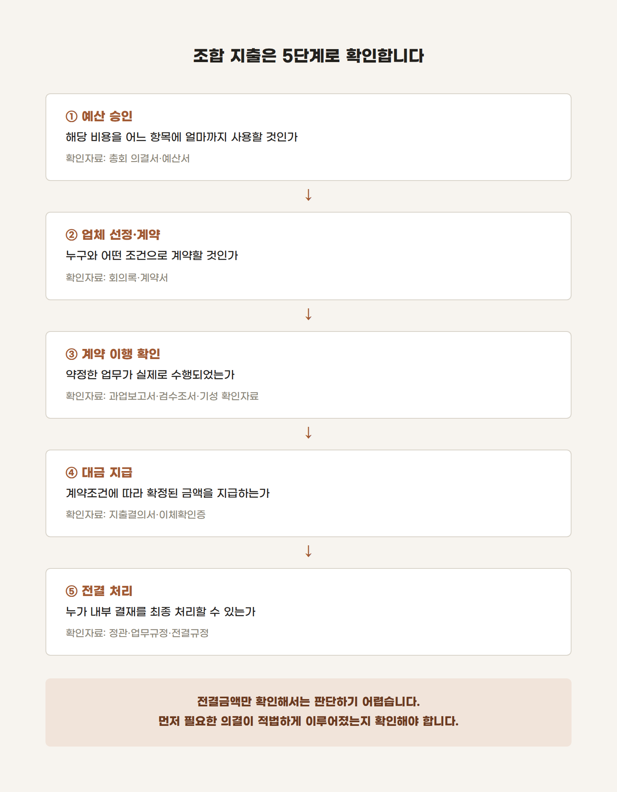

조합장 전결이면 이사회 의결 없이 지급해도 될까?
용역비가 여러 차례 나뉘어 지급돼 있습니다.
지출결의서의 결재란에는 '조합장 전결'이라고 적혀 있지만, 이사회 회의록에서는 관련 안건을 찾기 어렵습니다.
이런 자료를 확인하면 자연스럽게 다음 질문이 나옵니다.
조합장 전결로 지급할 수 있는 금액은 어디까지인가요?
먼저 결론부터 말씀드리면, 모든 정비사업조합에 공통으로 적용되는 하나의 전결금액이 정해져 있는 것은 아닙니다. 실무에서는 금액만 찾기 전에 다음 사항을 먼저 확인해야 합니다.
이번 지출은 이미 결정된 사항을 집행한 것인지, 아니면 새로운 의사결정이 필요한 사항인지입니다.
1. 예산 의결과 계약, 지급은 같은 절차가 아닙니다
하나의 용역비가 지급되기까지는 서로 다른 단계가 있습니다.
총회에서 예산을 승인받았다는 사실만으로 업체 선정과 계약조건, 지급시기까지 모두 결정된 것은 아닙니다.
반대로 적법하게 계약이 체결되고 지급조건도 충족된 대금을 지급할 때마다 반드시 새로운 의결을 거쳐야 한다고 단정할 수도 없습니다.
각 단계에서 누가 무엇을 결정하도록 정관과 내부규정이 정하고 있는지를 구분해야 합니다.
2. 전결은 필요한 의결을 생략하는 제도가 아닙니다
전결은 일정한 사무를 내부적으로 누가 최종 결재할 것인지 정하는 방식입니다.
따라서 총회·대의원회·이사회의 의결을 거쳐야 하는 사항을 단순히 '조합장 전결'이라고 표시했다고 해서 필요한 절차가 모두 충족되는 것은 아닙니다.
예를 들어 다음과 같은 경우에는 별도의 검토가 필요합니다.
- 예산에 없던 용역을 새로 계약하는 경우
- 기존 계약의 금액이나 업무범위를 변경하는 경우
- 계약서에서 정한 시기보다 대금을 먼저 지급하는 경우
- 예산과목을 변경하여 다른 목적으로 사용하는 경우
- 정관상 대의원회나 이사회 심의를 거쳐야 하는 업체를 선정하는 경우
- 조합원에게 추가 부담이 되는 계약을 체결하는 경우
도시정비법 제45조는 정비사업비의 세부 항목별 사용계획이 포함된 예산안과 예산의 사용내역, 예산으로 정한 사항 외에 조합원에게 부담이 되는 계약 등을 총회 의결사항으로 정하고 있습니다.
또한 서울시 표준 예산·회계규정은 예산에 편성되지 않은 공사·용역 계약, 예산의 전용, 지출의 사전승인 등에 관한 절차를 구분하고 있습니다. 따라서 전결규정이 있더라도 법령이나 정관이 특정 기관의 의결을 요구한다면, 전결만으로 그 절차를 대신할 수 있는지는 별도로 확인해야 합니다.
3. 이미 결정된 사항의 집행이라면 판단이 달라집니다
다음과 같은 경우를 생각해보겠습니다.
총회에서 세부 예산이 승인됐고, 정관에 따른 절차로 업체를 선정하여 계약을 체결했습니다. 용역도 정상적으로 수행됐으며, 계약서에서 정한 지급조건도 충족됐습니다.
이제 남은 업무가 계약조건에 따라 확정된 대금을 지급하는 것이라면, 이는 새로운 계약이나 예산 변경이 아니라 이미 결정된 사항의 집행에 해당할 수 있습니다.
이때는 정관과 업무규정, 전결규정에서 누가 지출결의와 지급을 승인하도록 정하고 있는지를 확인해야 합니다.
결국 판단의 기준은 단순히 지급액이 100만원인지 1,000만원인지가 아닙니다.
- 기존 의결과 계약의 범위 안에 있는가
- 지급조건이 실제로 충족됐는가
- 계약금액이나 업무범위가 변경되지 않았는가
- 예산과목을 다르게 사용하지 않았는가
- 정관과 내부규정이 정한 결재권자가 승인했는가
이 조건이 갖춰져야 '통상적인 집행업무'라고 판단할 수 있습니다.
4. 회계자료는 거래의 흐름으로 확인해야 합니다
조합 회계자료를 검토할 때 지출결의서의 '조합장 전결' 표시만 보고 적정 여부를 판단하기는 어렵습니다.
저는 보통 다음 순서로 자료를 연결해 확인합니다.
예산서 → 총회·대의원회·이사회 회의록 → 계약서 → 과업 및 검수자료 → 지출결의서 → 통장 지급내역

이 자료들이 하나의 거래로 자연스럽게 연결돼야 합니다.
예산은 있지만 계약절차가 확인되지 않거나, 계약은 있지만 지급조건이 충족되지 않았거나, 계약금액을 넘겨 지급했다면 전결 여부를 따지기 전에 다른 문제가 먼저 발견될 수 있습니다.
반대로 필요한 의결과 계약절차가 모두 확인되고 지급조건도 충족됐다면, 최종 지급결재가 누구의 전결사항인지는 해당 조합의 정관과 내부규정을 통해 판단할 수 있습니다.
결론적으로 "조합장 전결은 얼마까지 가능한가?"라는 질문에는 하나의 금액으로 답하기 어렵습니다.
먼저 확인해야 할 것은 금액이 아니라 다음 두 가지입니다.
- 이번 지급 전에 필요한 결정은 이미 적법하게 이루어졌는가.
- 조합장은 그 결정의 범위 안에서 대금을 집행하고 있는가.
정비사업조합의 지출은 의결서, 계약서, 검수자료, 지출결의서와 통장내역을 따로 보는 것보다 하나의 흐름으로 연결해 살펴봐야 판단이 훨씬 명확해집니다.
정비사업 회계자료를 직접 확인하고 정리하는 데 도움이 필요하시다면 아래 서비스를 참고해 주세요.

이 글은 2026년 9월 10일 현재 시행 중인 법령과 제공된 자료를 바탕으로 작성한 일반적인 정보입니다. 실제 적용 여부는 해당 조합의 정관, 업무규정, 예산·회계규정, 전결규정과 개별 계약내용에 따라 달라질 수 있으므로 실제 업무에 적용할 때에는 구체적인 사실관계를 별도로 확인하시기 바랍니다.
조종환 공인회계사·세무사